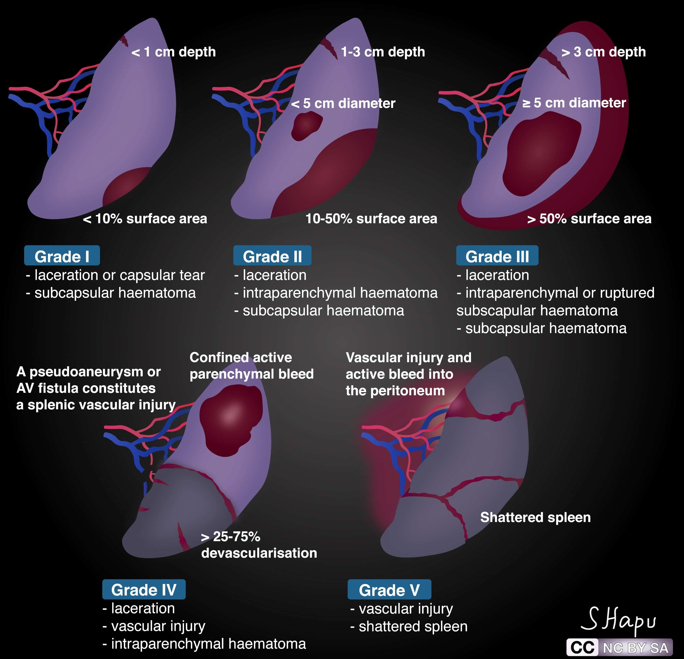

Chấn Thương Lách
I. Đại cương
– Lách là tạng đặc giàu mạch máu nằm trong khoang phúc mạc vùng hạ sườn trái, dưới vòm hoành trái và được cố định bởi bốn dây chằng (vị-lách, lách-thận, lách-đại tràng và hoành-lách):
+ Lách được che chở phía trước và sau bởi các cung sườn thấp bên trái (xương sườn IX–XI), nên gãy xương sườn này là dấu hiệu gợi ý mạnh tổn thương lách phối hợp.
+ Lách to bệnh lý làm mỏng bao lách và đẩy cực dưới vượt quá bờ sườn, khiến nhu mô dễ vỡ ngay cả sau chấn thương nhẹ.
– Dịch tễ: Lách là tạng đặc hay bị tổn thương nhất trong chấn thương bụng kín, chiếm khoảng 25–30% các trường hợp chấn thương tạng đặc trong ổ bụng:
+ Nguyên nhân hàng đầu là tai nạn giao thông, ngã cao, tai nạn lao động hoặc chấn thương thể thao.
+ Vỡ lách thì hai (delayed splenic rupture) xảy ra muộn sau chấn thương > 48 giờ (thường gặp nhất trong 4–8 ngày đầu), chiếm tỷ lệ thấp (khoảng 1% theo y văn hiện đại dùng cắt lớp vi tính, dao động 1–15% tùy nghiên cứu) nhưng tỷ lệ tử vong cao hơn rõ rệt so với vỡ cấp tính.
– Căn nguyên: Tổn thương lách xảy ra do các nhóm nguyên nhân chấn thương hoặc thầy thuốc, dễ bùng phát hơn trên nền bệnh lý lách có sẵn:
+ Chấn thương bụng kín là nhóm nguyên nhân chủ yếu, thường gặp nhất sau tai nạn giao thông, ngã cao, tai nạn lao động và chấn thương thể thao đối kháng.
+ Vết thương thấu bụng vùng ngực dưới hoặc hạ sườn trái do hỏa khí hoặc bạch khí gây rách trực tiếp nhu mô và mạch máu rốn lách.
+ Chấn thương do thủ thuật y khoa (iatrogenic injury) có thể xảy ra sau nội soi đại tràng góc lách, phẫu thuật ổ bụng vùng tầng trên mạc treo đại tràng ngang hoặc sinh thiết qua da.
+ Vỡ lách tự phát (spontaneous splenic rupture) hiếm gặp, xảy ra trên nền lách to bệnh lý do nhiễm trùng (tăng bạch cầu đơn nhân nhiễm khuẩn, sốt rét), bệnh lý ác tính huyết học hoặc thâm nhiễm.
– Cơ chế bệnh sinh: Lực tác động trực tiếp hoặc gián tiếp làm biến dạng đột ngột bao và nhu mô giàu mạch máu:
+ Chấn thương trực tiếp vào vùng ngực dưới trái hoặc hạ sườn trái gây đụng dập, tụ máu hoặc đường vỡ nhu mô lách.
+ Lực giảm tốc đột ngột hoặc chèn ép gián tiếp gây giằng kéo quá mức các dây chằng cố định (đặc biệt dây chằng lách-đại tràng) hoặc xoắn cuống mạch lách.
+ Vỡ lách thì hai hình thành do tụ máu dưới bao tăng áp lực thẩm thấu hút dịch gây căng vỡ bao muộn, ly giải cục máu đông nút mạch tạm thời, hoặc vỡ ổ giả phình mạch muộn.
– Phân bố: Tổn thương nhu mô thường ưu thế ở cực dưới và mặt hoành do tương quan giải phẫu với các dây chằng cố định và cung sườn:
+ Đường vỡ thường chạy dọc theo mặt phẳng các bè xơ và nhánh mạch phân thùy từ bao lách hướng về rốn lách, tạo tổn thương hình chêm hoặc chia cắt nhu mô.
+ Chấn thương lách đơn độc chiếm khoảng 60% trường hợp, phần còn lại thường phối hợp gãy xương sườn IX–XI trái, đụng dập đáy phổi trái, chấn thương thận trái, gan hoặc tụy.
– Biểu hiện lâm sàng: Bệnh nhân thường đau vùng hạ sườn trái, có thể lan lên vai trái (dấu hiệu Kehr) do máu kích thích vòm hoành trái, kèm dấu hiệu mất máu cấp hoặc sốc giảm thể tích khi chảy máu ồ ạt.
– Vai trò CĐHA: Cắt lớp vi tính có tiêm thuốc cản quang tĩnh mạch đa thì là tiêu chuẩn vàng ở bệnh nhân huyết động ổn định để phát hiện, phân độ theo AAST 2018 và xác định tổn thương mạch máu hoạt động nhằm định hướng điều trị bảo tồn, nút mạch hay phẫu thuật.

© Chẩn Đoán Hình Ảnh Xray.vn
II. Chẩn đoán x-quang
– Đặc điểm hình ảnh: Chụp X-quang bụng không chuẩn bị và X-quang ngực thẳng chủ yếu ghi nhận các dấu hiệu gián tiếp do hiệu ứng choán chỗ của khối máu tụ vùng hạ sườn trái, độ nhạy thấp trong phát hiện trực tiếp tổn thương nhu mô:
+ Bóng mờ lách giãn rộng hoặc xuất hiện khối mờ choán chỗ vùng hạ sườn trái do tụ máu dưới bao hoặc tụ máu quanh lách kích thước lớn.
+ Dạ dày giãn hơi thứ phát do liệt ruột cơ năng và bờ cong lớn bị đè đẩy lệch vào trong sang đường giữa.
+ Khoảng cách giữa vòm hoành trái và bóng hơi phình vị dạ dày giãn rộng do khối máu tụ chen vào khoang dưới hoành.
+ Vòm hoành trái bị đẩy nâng cao và hạn chế di động trên chiếu tăng sáng.
+ Góc đại tràng trái bị đè đẩy xuống thấp hơn vị trí giải phẫu bình thường, đôi khi mất dải mỡ cạnh phúc mạc trái (dấu hiệu dải sáng bên) khi tràn máu ổ bụng lượng nhiều.
– Tổn thương phối hợp: X-quang ngực thẳng và bụng giúp phát hiện nhanh các tổn thương khung xương và lồng ngực đi kèm:
+ Gãy các cung xương sườn thấp bên trái (xương sườn IX–XI) là dấu hiệu chỉ điểm quan trọng gợi ý lực chấn thương mạnh vùng lách.
+ Tràn dịch hoặc tràn khí khoang màng phổi trái, xẹp thùy dưới phổi trái kèm vùng mờ đáy phổi.
+ Vỡ cơ hoành trái với hình ảnh mất liên tục đường bờ vòm hoành, xuất hiện bóng hơi dạ dày hoặc quai ruột thoát vị lên lồng ngực.
– Cạm bẫy: Phim chụp tư thế nằm ngửa tại giường cấp cứu làm mờ ranh giới khối tụ máu, dịch tràn màng phổi và bóng hơi phình vị dễ bị nhầm lẫn, đồng thời X-quang bình thường không loại trừ được chấn thương lách nặng nên cần đánh giá tiếp bằng siêu âm hoặc cắt lớp vi tính.
=> Case lâm sàng 1:
III. Chẩn đoán siêu âm
* Dấu hiệu trực tiếp
– Đường vỡ: Tổn thương dạng đường hoặc dải chạy trong nhu mô từ bao lách hướng về rốn lách, bờ nham nhở và mất liên tục đường bờ bao lách khi rách xuyên bao:
+ Giai đoạn tối cấp thường biểu hiện đường tăng âm không đều do cục máu đông mới hình thành và bề mặt mô xé rách, sau đó chuyển dần sang giảm âm hoặc trống âm khi ly giải cục máu đông.
+ Tổn thương nặng làm chia cắt nhu mô thành nhiều mảnh rời rạc (lách vỡ nhiều mảnh), mất cấu trúc giải phẫu bình thường.
+ Vùng nhu mô kế cận thường kèm đụng dập cấu trúc âm không đồng nhất và ổ tụ máu dưới bao hoặc tụ máu quanh lách.
+ Trên siêu âm Doppler màu và năng lượng, đường vỡ là vùng khuyết tín hiệu tưới máu cắt ngang nhu mô, giúp phân biệt với khe hở lách bẩm sinh (có bờ nhẵn, không tụ máu và vẫn bảo tồn mạch máu chạy song song hai bên).
– Cạm bẫy:
+ Giai đoạn tối cấp, đường vỡ có thể đồng âm với nhu mô lách xung quanh do máu tươi chưa tách lớp và chưa ly giải, khiến tổn thương bị che lấp khi không có tràn máu ổ bụng đi kèm.
+ Ổ đụng dập nhu mô tăng âm hoặc cấu trúc âm không đồng nhất bao quanh dễ che lấp ranh giới đường vỡ bên trong, làm đánh giá thấp mức độ xé rách nhu mô và lan tới rốn lách trên siêu âm B-mode (khắc phục bằng siêu âm Doppler màu hoặc siêu âm tăng cường chất tương phản).
+ Khe hở lách bẩm sinh, vùng lách phụ kế cận rốn lách hoặc bóng cản âm từ cung xương sườn thấp bên trái che khuất cực trên lách dễ gây dương tính giả hoặc bỏ sót tổn thương.
=> Case lâm sàng 1:
=> Case lâm sàng 2:
=> Case lâm sàng 3:
=> Case lâm sàng 4:
=> Case lâm sàng 5:
=> Case lâm sàng 6:
=> Case lâm sàng 7:
=> Case lâm sàng 8:
=> Case lâm sàng 9:
=> Case lâm sàng 10:
=> Case lâm sàng 11:
– Đụng dập nhu mô: Vùng nhu mô tổn thương khu trú hoặc lan tỏa có cấu trúc âm không đồng nhất, ranh giới mờ nhòe với mô lành kế cận và không gây mất liên tục bao lách:
+ Cơ chế và diễn biến theo thời gian: Phù nề kẽ phối hợp xuất huyết vi thể tạo nên ổ tăng âm nhẹ hoặc âm vang hỗn hợp ở giai đoạn tối cấp, sau đó chuyển dần sang giảm âm khi tiến triển phù nề và tiêu sợi huyết sau 24–48 giờ.
+ Siêu âm Doppler màu: Tín hiệu tưới máu giảm hoặc biến dạng nhẹ bên trong ổ tổn thương nhưng vẫn bảo tồn tính liên tục của các nhánh mạch phân thùy đi qua, giúp phân biệt với đường vỡ lách (khuyết mạch cắt ngang hoàn toàn) và ổ nhồi máu lách (khuyết tưới máu hình chêm đỉnh hướng về rốn lách).
+ Ý nghĩa lâm sàng: Đụng dập đơn thuần không rách bao thường không gây tràn máu ổ bụng, nhưng cần theo dõi sát vì có thể tiến triển thành ổ tụ máu trong nhu mô hoặc vỡ lách thì hai.
– Cạm bẫy:
+ Giai đoạn tối cấp, ổ đụng dập kích thước nhỏ có thể đồng âm với nhu mô lách bình thường và không có dịch tự do ổ bụng đi kèm, gây âm tính giả trên siêu âm B-mode (khắc phục bằng siêu âm tăng cường chất tương phản cho thấy ổ giảm ngấm thuốc rõ nét).
+ Nhu mô lách thâm nhiễm không đồng nhất (trong bệnh lý huyết học, nhiễm trùng hoặc gan nhiễm mỡ kèm lách to) và bóng cản âm từ cung xương sườn thấp bên trái dễ gây dương tính giả hoặc che khuất tổn thương vùng cực trên.
=> Case lâm sàng 1:
=> Case lâm sàng 2:
=> Case lâm sàng 3:
– Khối máu tụ trong nhu mô: Ổ tụ máu khu trú bên trong nhu mô lách, hình tròn hoặc bầu dục, ranh giới tương đối rõ và thường có viền đụng dập nhu mô bao quanh:
+ Cơ chế và diễn biến hồi âm theo thời gian: Giai đoạn tối cấp tăng âm đồng nhất hoặc âm vang hỗn hợp do cục máu đông đặc giàu fibrin, sau đó giảm âm dần và chuyển sang trống âm có tăng âm phía sau kèm vách ngăn khi dịch hóa hoàn toàn.
+ Siêu âm Doppler màu: Vùng vô mạch hoàn toàn bên trong ổ máu tụ (không có tín hiệu dòng chảy) kèm hiệu ứng đè đẩy các nhánh mạch lân cận, giúp phân biệt với u mạch máu thể hang (có thể bắt tín hiệu dòng chảy chậm hoặc tăng âm đồng nhất) và giả phình mạch (có dòng chảy xoáy hình âm dương đặc trưng).
+ Ý nghĩa lâm sàng: Khối máu tụ đường kính ≥ 5 cm làm nâng bậc phân độ AAST 2018 lên độ III và làm tăng nguy cơ vỡ lách thì hai do hiện tượng hút dịch tăng áp lực thẩm thấu.
– Cạm bẫy:
+ Giai đoạn bán cấp đang thoái triển, khối máu tụ có thể chuyển sang đồng âm tạm thời với nhu mô lách lành, gây âm tính giả trên siêu âm B-mode (khắc phục bằng siêu âm tăng cường chất tương phản cho thấy ổ khuyết ngấm thuốc sắc nét).
+ Khối máu tụ đã dịch hóa hoàn toàn dễ nhầm với nang lách bẩm sinh, nang giả tụy xâm lấn lách hoặc ổ áp xe lách khi thiếu đối chiếu tiền sử chấn thương và vùng đụng dập bao quanh.
=> Case lâm sàng 1:
=> Case lâm sàng 2:
=> Case lâm sàng 3:
=> Case lâm sàng 4:
=> Case lâm sàng 5:
=> Case lâm sàng 6:
– Tụ máu dưới bao lách: Khối tụ dịch nằm giữa bao lách còn nguyên vẹn và bề mặt nhu mô, hình liềm khi lượng ít hoặc hình thấu kính hai mặt lồi khi lượng nhiều kèm hiệu ứng đè lõm nhu mô lách kế cận:
+ Cơ chế và diễn biến hồi âm theo thời gian: Giai đoạn tối cấp tăng âm đồng nhất hoặc âm vang hỗn hợp do cục máu đông mới giàu fibrin, sau đó giảm âm, trống âm khi dịch hóa hoàn toàn và hình thành các dải vách sợi mảnh ở giai đoạn muộn do tiêu sợi huyết.
+ Siêu âm Doppler màu: Vùng vô mạch hoàn toàn nằm dưới bao lách nguyên vẹn, giúp phân biệt với tụ máu quanh lách (nằm tự do ngoài bao và không đè lõm bề mặt nhu mô) và nhu mô lách bình thường.
+ Ý nghĩa lâm sàng: Tụ máu chiếm < 10%, 10–50% và > 50% diện tích bề mặt lách tương ứng phân độ AAST 2018 từ độ I đến độ III, đồng thời ổ tụ máu lớn dễ gây vỡ bao muộn (vỡ lách thì hai) do hút dịch tăng áp lực thẩm thấu.
– Cạm bẫy:
+ Giai đoạn tối cấp hoặc bán cấp, khối máu tụ có thể đồng âm với nhu mô lách bình thường, làm che khuất ranh giới phân tách nhu mô – bao lách và gây âm tính giả trên siêu âm B-mode (khắc phục bằng siêu âm tăng cường chất tương phản hoặc cắt lớp vi tính).
+ Biến thể thùy gan trái kéo dài ôm quanh mặt ngoài lách (gan đuôi hải ly) hoặc dịch tự do khoang dưới hoành trái dễ nhầm với tụ máu dưới bao, phân biệt dựa vào tín hiệu tưới máu nhu mô gan liên tục với thùy gan trái và không có hiệu ứng đè lõm bờ lách.
=> Case lâm sàng 1:
=> Case lâm sàng 2:
– Tụ máu quanh lách: Khối tụ dịch hoặc cục máu đông nằm tự do trong khoang phúc mạc vùng hạ sườn trái, bao quanh bề mặt ngoài lách và thường liên quan đến rách bao lách hoặc vỡ khối tụ máu dưới bao:
+ Cơ chế và diễn biến hồi âm theo thời gian: Giai đoạn tối cấp biểu hiện khối tăng âm đồng nhất hoặc âm vang hỗn hợp không đồng nhất do cục máu đông mới tập trung tại nguồn chảy máu (dấu hiệu cục máu đông chỉ điểm), sau đó giảm âm và phân lớp dịch – tế bào khi ly giải cục máu đông.
+ Hình thái và phân biệt: Tụ máu quanh lách có bờ ngoài không đều, men theo các ngách phúc mạc lân cận và không gây hiệu ứng đè lõm bề mặt nhu mô lách, giúp phân biệt với tụ máu dưới bao (hình liềm hoặc thấu kính bờ nhẵn đè lõm nhu mô).
+ Ý nghĩa lâm sàng: Khẳng định tổn thương đã xuyên qua bao lách vào khoang phúc mạc (nâng bậc tối thiểu lên độ III theo phân độ AAST 2018 khi kèm vỡ bao), đồng thời định hướng tìm kiếm điểm chảy máu hoạt động hoặc dịch máu lan tỏa ở các khoang thấp của ổ bụng.
– Cạm bẫy:
+ Giai đoạn tối cấp, khối máu tụ đông đặc tăng âm dễ hòa lẫn với mỡ mạc nối lớn hoặc mỡ quanh đại tràng góc lách có độ hồi âm tương tự, gây âm tính giả khi thiếu dịch trống âm bao quanh.
+ Biến thể thùy gan trái kéo dài ôm quanh mặt ngoài lách (gan đuôi hải ly), dịch dạ dày tồn dư hoặc dịch cổ trướng tự do đơn thuần dễ gây dương tính giả, phân biệt dựa vào tín hiệu tưới máu nhu mô gan trên siêu âm Doppler màu và hồi âm lợn cợn đặc trưng của dịch máu.
=> Case lâm sàng 1:
=> Case lâm sàng 2:
=> Case lâm sàng 3:
=> Case lâm sàng 4:
=> Case lâm sàng 5:
=> Case lâm sàng 6:
=> Case lâm sàng 7:
=> Case lâm sàng 8:
=> Case lâm sàng 9:
* Dấu hiệu gián tiếp
– Dịch tự do ổ bụng: Tụ dịch trong các khoang phúc mạc vùng thấp và quanh tạng là dấu hiệu gợi ý quan trọng nhất của tổn thương rách bao lách trên siêu âm cấp cứu tại giường (eFAST):
+ Phân bố theo trọng lực ở tư thế nằm ngửa: Dịch xuất hiện sớm nhất tại khoang lách-thận và rãnh thành-đại tràng trái, sau đó lan sang khoang gan-thận (khoang Morison), rãnh thành-đại tràng phải và túi cùng Douglas.
+ Đặc điểm hồi âm theo thời gian: Dịch máu mới giai đoạn tối cấp có thể trống âm hoàn toàn (dễ nhầm dịch báng), sau vài giờ chuyển sang dịch hồi âm lợn cợn hoặc âm vang không đồng nhất do hình thành cục máu đông và lắng đọng hồng cầu (dấu hiệu mức dịch-tế bào).
+ Ý nghĩa lâm sàng: Khối lượng dịch máu ổ bụng tỷ lệ thuận với mức độ tổn thương mạch máu và nhu mô, giúp định hướng nhanh chỉ định mở bụng cấp cứu ở bệnh nhân huyết động không ổn định.
– Cạm bẫy:
+ Khảo sát quá sớm ngay sau tai nạn khi lượng máu chảy < 100–200 mL, hoặc cục máu đông mới hình thành tăng âm đồng nhất hòa lẫn với các quai ruột và mạc treo gây âm tính giả trên siêu âm B-mode.
+ Dịch báng có sẵn trên nền xơ gan, dịch dạ dày tồn dư, dịch ruột non hoặc lớp mỡ khoang lách-thận dày dễ gây dương tính giả khi không đối chiếu tính chất lợn cợn của dịch máu và nhu động ruột.


=> Case lâm sàng 0:
=> Case lâm sàng 1:
=> Case lâm sàng 2:
=> Case lâm sàng 3:
– Tổn thương phối hợp trên siêu âm: Khảo sát vùng ngực dưới và thành ngực bên trái trong quy trình siêu âm cấp cứu mở rộng (eFAST) giúp phát hiện nhanh các tổn thương đi kèm:
+ Tràn dịch khoang màng phổi trái: Khoảng trống âm hoặc hồi âm lợn cợn dạng máu cục nằm trên vòm hoành trái (xóa dấu hiệu soi gương của lách qua vòm hoành), gợi ý tràn máu màng phổi phối hợp.
+ Gãy các cung xương sườn cuối bên trái: Mất liên tục vỏ xương tăng âm kèm gián đoạn bậc thang và tụ máu dưới màng xương tại vị trí đau chói, là dấu hiệu chỉ điểm lực va đập mạnh trực tiếp vào vùng lách.
+ Tụ máu thành ngực và tràn khí dưới da: Khối giảm âm hoặc hồi âm hỗn hợp khu trú trong các lớp cơ thành ngực trái kèm các dải tăng âm kèm bóng cản bẩn và nhiễu ảnh đuôi sao chổi trong mô dưới da (gợi ý tràn khí màng phổi hoặc tổn thương đường thở đi kèm).
– Cạm bẫy:
+ Tràn khí dưới da thành ngực trái tạo bóng cản bẩn và nhiễu ảnh phản xạ đa chiều che khuất hoàn toàn cửa sổ khảo sát nhu mô lách và khoang lách-thận bên dưới, gây âm tính giả trên siêu âm.
+ Vùng mờ đáy phổi đông đặc hoặc xẹp thùy dưới phổi trái kèm dịch quanh lách dễ nhầm lẫn ranh giới trên và dưới vòm hoành nếu không định vị chính xác dải tăng âm cong của cơ hoành.
=> Case lâm sàng 1:


=> Case lâm sàng 2:


* Chẩn đoán phân biệt
– Khe hở lách bẩm sinh (splenic cleft): Khuyết lõm bẩm sinh trên bề mặt lách do sự hợp nhất không hoàn toàn của các nụ lách thời kỳ phôi thai:
+ Dấu hiệu gây nhầm lẫn: Dải giảm âm hoặc trống âm (khi chứa mỡ mạc nối) chạy từ bề mặt vào nhu mô lách, dễ chẩn đoán nhầm đường vỡ lách.
+ Dấu hiệu phân biệt: Bờ khuyết nhẵn đều, góc tù, không kèm tụ máu dưới bao hay dịch tự do quanh lách, và siêu âm Doppler màu ghi nhận các nhánh mạch phân thùy chạy song song hai bên bờ khe mà không bị cắt ngang.
– Lách phụ (accessory spleen): Nốt mô lách lạc chỗ bẩm sinh thường nằm vùng rốn lách, cực dưới lách hoặc đuôi tụy, kích thước thường < 2–3 cm:
+ Dấu hiệu gây nhầm lẫn: Khối tròn hoặc bầu dục nằm cạnh rốn lách dễ nhầm với mảnh nhu mô lách vỡ rời hoặc cục máu đông khu trú quanh lách.
+ Dấu hiệu phân biệt: Bờ nhẵn, độ hồi âm đồng nhất giống hệt nhu mô lách chính, không kèm dịch máu xung quanh và có cuống mạch nuôi riêng đi vào từ hệ mạch rốn lách trên siêu âm Doppler màu.
– Nhồi máu lách (splenic infarction): Vùng hoại tử thiếu máu nhu mô lách sau chấn thương mạch máu phân thùy hoặc trên nền bệnh lý huyết khối/thuyên tắc có sẵn:
+ Dấu hiệu gây nhầm lẫn: Vùng giảm âm khu trú dưới bao lách dễ nhầm với ổ đụng dập nhu mô hoặc tụ máu dưới bao.
+ Dấu hiệu phân biệt: Tổn thương hình chêm điển hình với đáy tựa lên bao lách và đỉnh hướng về rốn lách, ranh giới rõ nét, bao lách nguyên vẹn và khuyết hoàn toàn tín hiệu tưới máu trên siêu âm Doppler màu hoặc siêu âm tăng cường chất tương phản.
– Bệnh lý lách có sẵn (nang lách bẩm sinh, u mạch máu thể hang, áp xe lách): Các tổn thương khu trú tồn tại trước chấn thương được phát hiện tình cờ khi siêu âm cấp cứu:
+ Dấu hiệu gây nhầm lẫn: Nang lách trống âm bờ rõ giống tụ máu đã dịch hóa; u mạch máu tăng âm giống khối máu tụ giai đoạn tối cấp; ổ áp xe hồi âm hỗn hợp giống đụng dập hoại tử.
+ Dấu hiệu phân biệt: Không có tiền sử chấn thương tương xứng vùng hạ sườn trái, thiếu ổ đụng dập nhu mô hay tụ máu quanh lách đi kèm, và có đặc điểm mạch máu đặc trưng của từng tổn thương trên siêu âm Doppler màu hoặc cắt lớp vi tính.
– Gan đuôi hải ly (beaver tail liver): Biến thể giải phẫu bình thường của thùy gan trái kéo dài sang trái ra sau và ôm quanh bờ trước ngoài lách, thường gặp hơn ở nữ giới:
+ Dấu hiệu gây nhầm lẫn: Khối đặc ôm sát bờ ngoài lách có độ hồi âm nhu mô tương đồng với khối máu tụ dưới bao hoặc tụ máu quanh lách giai đoạn tối cấp trên siêu âm B-mode.
+ Dấu hiệu phân biệt: Quét đầu dò liên tục theo mặt cắt ngang dưới sườn cho thấy nhu mô nối liền trực tiếp với thùy gan trái, cấu trúc âm đồng nhất đặc trưng của nhu mô gan, không có đường phân cách bao lách bị đè lõm và bảo tồn tín hiệu mạch máu cửa/gan đi vào bên trong trên siêu âm Doppler màu.


=> Videos siêu âm:
=> Case lâm sàng 1:


=> Case lâm sàng 2:


IV. Chẩn đoán CLVT
* Tụ máu dưới bao
– Đặc điểm hình ảnh cắt lớp vi tính: Khối tụ dịch nằm giữa bao lách còn nguyên vẹn và bề mặt nhu mô, hình liềm khi lượng ít hoặc hình thấu kính hai mặt lồi khi lượng nhiều, bờ ngoài nhẵn đều và đè lõm nhu mô lách kế cận:
+ Diễn biến tỷ trọng trước tiêm: Giai đoạn cấp tính tăng tỷ trọng tự nhiên 60–80 HU do cục máu đông đặc giàu protein và hemoglobin, sau đó giảm dần về tỷ trọng dịch (< 20–30 HU) sau vài ngày đến vài tuần do ly giải huyết khối.
+ Thì sau tiêm thuốc cản quang: Khối máu tụ hoàn toàn không ngấm thuốc qua các thì (động mạch, tĩnh mạch cửa và thì muộn), tạo tương phản rõ nét với nhu mô lách ngấm thuốc mạnh trên thì tĩnh mạch cửa (60–70 giây sau tiêm).
+ Phân biệt cốt lõi: Khác với tụ máu quanh lách ở đặc điểm bờ ngoài nhẵn đều giới hạn trong bao lách và tạo hiệu ứng đè lõm bề mặt nhu mô (tụ máu quanh lách bờ ngoài không đều, lan tự do theo khoang phúc mạc và không đè lõm nhu mô).
+ Ý nghĩa lâm sàng: Tỷ lệ diện tích bề mặt lách bị bao phủ (< 10%, 10–50% và > 50%) quyết định trực tiếp phân độ AAST 2018 từ độ I đến độ III, đồng thời ổ tụ máu kích thước lớn có nguy cơ vỡ bao gây vỡ lách thì hai.
– Cạm bẫy: Biến thể thùy gan trái kéo dài ôm quanh bờ ngoài lách (gan đuôi hải ly) hoặc lớp mỡ/dịch khu trú khoang dưới hoành trái dễ gây dương tính giả trên cắt lớp vi tính không tiêm thuốc, phân biệt dựa vào nhu mô gan ngấm thuốc đồng nhất và liên tục với thùy gan trái sau tiêm.


=> Case lâm sàng 1:


* Đụng dập nhu mô
– Đặc điểm hình ảnh cắt lớp vi tính: Vùng nhu mô tổn thương khu trú hoặc lan tỏa có bờ mờ nhòe với mô lành kế cận, kích thước thay đổi tùy mức độ va đập và không gây mất liên tục bao lách:
+ Thì trước tiêm thuốc cản quang: Giảm tỷ trọng không đồng nhất do phù nề kẽ và xuất huyết vi thể, đôi khi chứa ổ máu tụ trung tâm tăng tỷ trọng tự nhiên 60–80 HU giai đoạn tối cấp rồi giảm dần tỷ trọng khi ly giải cục máu đông.
+ Thì sau tiêm thuốc cản quang: Ngấm thuốc kém và không đều so với nhu mô lách bình thường trên thì tĩnh mạch cửa (60–70 giây sau tiêm) nhưng vẫn bảo tồn cấu trúc mạch máu phân thùy đi qua vùng tổn thương.
+ Phân biệt cốt lõi: Khác với đường vỡ lách (tổn thương dạng dải sắc nét cắt ngang nhu mô kèm gián đoạn mạch máu) và ổ nhồi máu lách (vùng khuyết tưới máu hình chêm ranh giới rõ, đỉnh hướng về rốn lách).
+ Ý nghĩa lâm sàng: Đụng dập đơn thuần không làm tăng bậc phân độ AAST 2018 nhưng cần theo dõi sát do nguy cơ tiến triển thành khối máu tụ trong nhu mô hoặc vỡ lách thì hai. Tránh nhầm lẫn với nhiễu ảnh dải cứng chùm tia từ cung xương sườn thấp bên trái (chạy xuyên ra ngoài bao lách và đổi hướng trên mặt phẳng tái tạo đa bình diện).


* Ổ tụ máu
– Đặc điểm hình ảnh cắt lớp vi tính: Khối tụ máu khu trú bên trong nhu mô lách, hình tròn hoặc bầu dục, ranh giới tương đối rõ và thường có vùng đụng dập nhu mô giảm tỷ trọng bao quanh:
+ Thì trước tiêm thuốc cản quang: Giai đoạn cấp tính tăng tỷ trọng tự nhiên 60–80 HU do cục máu đông đặc giàu protein và hemoglobin (dấu hiệu cục máu đông chỉ điểm), sau đó giảm dần về tỷ trọng dịch (< 20–30 HU) sau vài ngày đến vài tuần do ly giải huyết khối.
+ Thì sau tiêm thuốc cản quang: Khối máu tụ hoàn toàn không ngấm thuốc qua các thì, tạo ổ khuyết tỷ trọng sắc nét trên nền nhu mô lách ngấm thuốc mạnh ở thì tĩnh mạch cửa (60–70 giây sau tiêm) kèm hiệu ứng đè đẩy các nhánh mạch lân cận.
+ Dấu hiệu chảy máu hoạt động phối hợp: Xuất hiện ổ hoặc tia thoát thuốc cản quang tăng tỷ trọng cao (80–95 HU, chênh lệch ≤ 10 HU so với động mạch chủ cùng lát cắt) lan rộng và giảm độ sắc nét ở thì muộn.
+ Ý nghĩa lâm sàng: Khối máu tụ đường kính ≥ 5 cm làm nâng bậc phân độ AAST 2018 lên độ III, đồng thời ổ tụ máu lớn dễ gây vỡ bao muộn (vỡ lách thì hai) do hút dịch tăng áp lực thẩm thấu.
– Cạm bẫy:
+ Giai đoạn bán cấp đang thoái triển, ổ máu tụ tăng tỷ trọng tự nhiên có thể tạm thời đồng tỷ trọng với nhu mô lách ngấm thuốc, đòi hỏi đối chiếu chặt chẽ với thì trước tiêm để tránh bỏ sót tổn thương.
+ Khối máu tụ đã dịch hóa hoàn toàn ở giai đoạn muộn dễ nhầm với nang lách bẩm sinh, nang giả tụy xâm lấn lách hoặc ổ áp xe lách khi thiếu đối chiếu tiền sử chấn thương và viền đụng dập bao quanh.

* Đường vỡ lách
– Đặc điểm hình ảnh cắt lớp vi tính: Tổn thương xé rách nhu mô dạng đường thẳng, hình chêm hoặc phân nhánh hình chân chim chạy từ bao lách hướng về rốn lách, bờ nham nhở răng cưa và làm mất liên tục đường bờ bao lách khi rách xuyên bao:
+ Thì trước tiêm thuốc cản quang: Giảm tỷ trọng tự nhiên hoặc tỷ trọng không đều do dịch máu lẫn cục máu đông tươi (tăng tỷ trọng 60–80 HU) xen kẽ trong khe rách.
+ Thì tĩnh mạch cửa (60–70 giây sau tiêm): Là thì chuẩn mực để đánh giá đường vỡ nhờ nhu mô lách ngấm thuốc mạnh và đồng nhất, làm nổi bật đường vỡ dạng dải giảm tỷ trọng sắc nét cắt ngang nhu mô và gián đoạn các nhánh mạch máu phân thùy; tránh đánh giá đơn độc ở thì động mạch sớm (30–40 giây) do nhu mô lách ngấm thuốc dạng ngựa vằn dễ gây dương tính giả hoặc che lấp tổn thương.
+ Tổn thương phối hợp tại chỗ: Thường đi kèm ổ đụng dập nhu mô bao quanh, khối máu tụ trong nhu mô, tụ máu dưới bao hoặc tụ máu quanh lách kèm tràn máu ổ bụng (tỷ trọng dịch máu tự do 30–45 HU và cục máu đông chỉ điểm 45–70 HU).
+ Ý nghĩa lâm sàng: Chiều sâu đường vỡ từ bề mặt bao lách (< 1 cm, 1–3 cm và > 3 cm) quyết định trực tiếp phân độ AAST 2018 từ độ I đến độ III; đường vỡ lan tới rốn lách gây nhồi máu > 25% thể tích lách nâng bậc lên độ IV, và vỡ chia cắt lách nhiều mảnh (shattered spleen) tương ứng độ V.


=> Case lâm sàng 1:


=> Case lâm sàng 2:


=> Case lâm sàng 3:


=> Case lâm sàng 4:


* Phân biệt đường vỡ
– Khe hở lách bẩm sinh (splenic cleft): Khuyết lõm giải phẫu bình thường trên bề mặt lách do sự hợp nhất không hoàn toàn của các nụ lách thời kỳ phôi thai:
+ Dấu hiệu gây nhầm lẫn: Dải giảm tỷ trọng chạy từ bề mặt bao lách hướng vào nhu mô, dễ chẩn đoán nhầm đường vỡ lách trên lát cắt ngang đơn lẻ.
+ Dấu hiệu phân biệt: Bờ khe nhẵn đều, góc tù, không kèm tụ máu dưới bao, tụ máu quanh lách hay thâm nhiễm mỡ xung quanh; khe lớn thường chứa mỡ mạc nối tự nhiên (tỷ trọng âm từ -50 đến -100 HU) và bảo tồn các nhánh mạch phân thùy chạy song song hai bên mà không bị cắt ngang.


– Nhu mô lách ngấm thuốc dạng ngựa vằn (zebra spleen): Hiện tượng ngấm thuốc không đồng nhất sinh lý của nhu mô lách ở thì động mạch sớm (30–40 giây sau tiêm) do sự khác biệt tốc độ lưu thông máu giữa tủy đỏ và tủy trắng:
+ Dấu hiệu gây nhầm lẫn: Các dải giảm tỷ trọng đan xen vùng tăng tỷ trọng mạnh trong nhu mô dễ tạo dương tính giả (nhầm đường vỡ hoặc đụng dập) hoặc che lấp tổn thương thật.
+ Dấu hiệu phân biệt: Các dải giảm tỷ trọng phân bố tỏa lan dạng vân gợn sóng, không tạo khe mất liên tục bờ bao lách và đồng nhất hoàn toàn trên thì tĩnh mạch cửa (60–70 giây sau tiêm) cũng như thì muộn.


– Nhồi máu lách (splenic infarction): Vùng hoại tử thiếu máu nhu mô lách do tắc nhánh động mạch phân thùy sau chấn thương hoặc bệnh lý huyết khối có sẵn:
+ Dấu hiệu gây nhầm lẫn: Vùng giảm tỷ trọng khu trú chạy từ bao lách hướng về rốn lách trên thì tĩnh mạch cửa dễ nhầm với đường vỡ rộng hoặc ổ đụng dập.
+ Dấu hiệu phân biệt: Tổn thương hình chêm điển hình với đáy tựa lên bao lách và đỉnh hướng về rốn lách, ranh giới sắc nét, bảo tồn liên tục đường bờ bao lách và không kèm tụ máu dưới bao hay tràn máu ổ bụng.


* Nhồi máu lách
– Cơ chế bệnh sinh và dịch tễ: Biến chứng hiếm gặp (< 2% trường hợp chấn thương lách), xảy ra khi đường vỡ nhu mô sâu hoặc lực giằng kéo làm rách, huyết khối nhánh động mạch phân thùy (nhồi máu khu trú) hoặc đứt cuống mạch rốn lách (nhồi máu toàn bộ lách).
– Đặc điểm hình ảnh cắt lớp vi tính: Biến đổi rõ rệt theo từng giai đoạn tiến triển từ thiếu máu cấp đến xơ hóa mạn tính, đánh giá tối ưu trên thì tĩnh mạch cửa (60–70 giây sau tiêm):
+ Giai đoạn tối cấp (< 24 giờ): Thường khó phát hiện trên thì trước tiêm (chỉ thấy vùng giảm tỷ trọng nhẹ kín đáo hoặc ổ tăng tỷ trọng 50–70 HU khi có chuyển dạng xuất huyết), sau tiêm biểu hiện vùng khuyết ngấm thuốc ranh giới chưa sắc nét.
+ Giai đoạn cấp và bán cấp: Tổn thương ngoại vi hình chêm điển hình với đáy tựa lên bao lách và đỉnh hướng về rốn lách, bờ rõ nét, giảm tỷ trọng rõ và hoàn toàn không ngấm thuốc sau tiêm trên thì tĩnh mạch cửa, kèm dấu hiệu bao lách mỏng ngấm thuốc viền nhẹ nhờ tuần hoàn bàng hệ vỏ bao (cortical rim sign).
+ Nhồi máu toàn bộ lách: Toàn bộ nhu mô lách mất hoàn toàn tín hiệu ngấm thuốc sau tiêm thuốc cản quang (lách đen), kèm dấu hiệu cắt cụt đột ngột động mạch lách tại vùng rốn lách.
+ Giai đoạn mạn tính: Vùng nhồi máu co rút xơ hóa tạo khuyết lõm bờ lách kèm phì đại bù trừ nhu mô lách lành kế cận, có thể dịch hóa tạo ổ tổn thương dạng nang tỷ trọng dịch (< 20 HU) hoặc đóng vôi di chứng.
– Ý nghĩa lâm sàng: Đường vỡ nhu mô kèm tổn thương mạch máu phân thùy hoặc rốn lách gây nhồi máu > 25% thể tích lách làm nâng bậc phân độ AAST 2018 lên độ IV; ổ nhồi máu lớn hoặc dịch hóa có nguy cơ bội nhiễm tạo áp xe lách muộn; giai đoạn mạn tính co rút xơ hóa hoặc dịch hóa cần phân biệt với khe hở lách bẩm sinh, nang lách hoặc áp xe lách.


=> Case lâm sàng 1:


* Tổn thương gián tiếp
– Tụ máu quanh lách: Khối tụ dịch hoặc cục máu đông nằm tự do trong khoang phúc mạc vùng hạ sườn trái, ôm quanh bề mặt ngoài lách và thường liên quan đến rách bao lách hoặc vỡ khối tụ máu dưới bao:
+ Đặc điểm tỷ trọng và hình thái: Bờ ngoài không đều, lan tự do theo các ngách phúc mạc lân cận và không tạo hiệu ứng đè lõm bề mặt nhu mô lách, giúp phân biệt với tụ máu dưới bao (hình liềm hoặc thấu kính bờ nhẵn đè lõm nhu mô).
+ Dấu hiệu cục máu đông chỉ điểm (sentinel clot sign): Khối máu cục tăng tỷ trọng cao nhất (45–70 HU) tập trung sát nguồn chảy máu vùng rốn lách hoặc khe vỡ nhu mô, giúp định vị tạng tổn thương chính khi có tràn máu ổ bụng lan tỏa.
– Tràn máu ổ bụng: Dịch tự do tăng tỷ trọng tự nhiên trong các khoang phúc mạc vùng thấp, mức độ nhiều hay ít phản ánh gián tiếp lưu lượng chảy máu và nguy cơ mất ổn định huyết động:
+ Phân bố theo trọng lực: Tụ dịch sớm nhất tại khoang lách-thận và rãnh thành-đại tràng trái, sau đó lan sang khoang gan-thận (khoang Morison), rãnh thành-đại tràng phải và túi cùng Douglas ở tiểu khung.
+ Thang tỷ trọng dịch máu: Dịch máu mới chảy hoặc đã pha loãng có tỷ trọng 30–45 HU, trong khi cục máu đông cô đặc giàu fibrin và hemoglobin đạt 45–70 HU (tạo mức lắng đọng dịch-tế bào ở vùng thấp).
– Tổn thương lồng ngực và các tạng phối hợp: Rà soát vùng đáy ngực trái và tầng trên mạc treo đại tràng ngang trên cắt lớp vi tính giúp phát hiện kịp thời các chấn thương đi kèm:
+ Tràn máu khoang màng phổi trái kèm xẹp thụ động nhu mô đáy phổi trái và gãy các cung xương sườn cuối bên trái (xương sườn IX–XI).
+ Chấn thương rách cơ hoành trái (gián đoạn liên tục vòm hoành, dấu hiệu cổ thắt dạ dày/quai ruột thoát vị) và chấn thương phối hợp thận trái, đuôi tụy hoặc thùy gan trái.
– Cạm bẫy:
+ Dịch máu giai đoạn tối cấp (< 1–2 giờ) hoặc dịch máu bị pha loãng ở bệnh nhân thiếu máu nặng, truyền dịch khối lượng lớn có tỷ trọng thấp (< 20–30 HU), dễ nhầm với dịch cổ trướng đơn thuần hoặc dịch thủng tạng rỗng.
+ Biến thể thùy gan trái kéo dài ôm quanh mặt ngoài lách (gan đuôi hải ly) hoặc dịch tồn dư trong dạ dày/đại tràng góc lách dễ gây dương tính giả tụ máu quanh lách trên thì trước tiêm, phân biệt dựa vào nhu mô gan ngấm thuốc đồng nhất sau tiêm.

=> Case lâm sàng 1:


* Chảy máu hoạt động
– Cơ chế bệnh sinh: Hiện tượng thoát thuốc cản quang tự do ra khỏi lòng mạch sau tiêm thuốc cản quang tĩnh mạch do rách thành mạch máu đang tiếp diễn, thường gặp trong bệnh cảnh chấn thương lách mức độ nặng.
– Đặc điểm hình ảnh cắt lớp vi tính: Khảo sát tối ưu bằng giao thức đa thì (trước tiêm, thì động mạch, thì tĩnh mạch cửa và thì muộn 3–5 phút) để nhận diện rõ ổ thoát thuốc ngoài lòng mạch:
+ Thì động mạch và thì tĩnh mạch cửa: Ổ tăng tỷ trọng mạnh (80–95 HU), dạng tia phun (jet-like), vệt loang lổ không đều hoặc lan tỏa thành dải trong nhu mô lách (chảy máu trong bao) hay tràn tự do vào khoang phúc mạc (chảy máu ngoài bao), có tỷ trọng chênh lệch ≤ 10 HU so với động mạch chủ hoặc nhánh mạch máu lớn kế cận cùng lát cắt.
+ Thì muộn (3–5 phút sau tiêm): Ổ thoát thuốc tiếp tục lan rộng về kích thước, nhòe dần ranh giới do thuốc cản quang khuếch tán vào khối máu tụ xung quanh và duy trì tỷ trọng cao hơn rõ rệt so với nhu mô lách lành, giúp phân biệt dứt điểm với giả phình mạch lách (giữ nguyên hình dáng tròn/bầu dục sắc nét và thải thuốc đồng tỷ trọng nhu mô ở thì muộn).
– Ý nghĩa lâm sàng: Chảy máu hoạt động giới hạn trong bao lách xếp phân độ AAST 2018 độ IV, còn chảy máu hoạt động lan ra ngoài bao lách vào khoang phúc mạc xếp độ V; đây là chỉ dấu tiên lượng hàng đầu thất bại điều trị bảo tồn và là chỉ định cấp cứu chụp mạch số hóa xóa nền nút mạch chọn lọc (nếu huyết động ổn định) hoặc phẫu thuật mở bụng cầm máu (nếu huyết động không ổn định).
– Cạm bẫy: Chỉ chụp đơn thì động mạch sớm dễ bỏ sót các ổ chảy máu tĩnh mạch hoặc rỉ máu lưu lượng thấp chỉ bộc lộ rõ ở thì tĩnh mạch cửa và thì muộn, gây âm tính giả; đồng thời không chụp thì muộn dễ nhầm lẫn giữa chảy máu hoạt động khu trú với ổ giả phình mạch lách.


=> Case lâm sàng 1:


=> Case lâm sàng 2:


=> Case lâm sàng 3:


=> Case lâm sàng 4:


=> Case lâm sàng 5:


=> Case lâm sàng 6:


=> Case lâm sàng 7:


* Giả phình mạch
– Cơ chế bệnh sinh: Túi phình mạch khu trú hình thành sau rách một phần lớp áo trong và áo giữa thành nhánh động mạch lách, được bao bọc bên ngoài bởi lớp áo ngoài còn nguyên vẹn hoặc khối máu tụ lân cận thông thương trực tiếp với lòng mạch.
– Đặc điểm hình ảnh cắt lớp vi tính: Khảo sát tối ưu trên giao thức đa thì (động mạch, tĩnh mạch cửa và thì muộn 3–5 phút) để đánh giá động học ngấm và thải thuốc đặc trưng:
+ Thì động mạch: Ổ ngấm thuốc mạnh hình tròn hoặc bầu dục, bờ sắc nét, kích thước và hình dạng cố định, có tỷ trọng tương đương động mạch chủ hoặc nhánh mạch lách kế cận (chênh lệch ≤ 10 HU).
+ Thì tĩnh mạch cửa và thì muộn (3–5 phút sau tiêm): Giữ nguyên kích thước và hình dáng ban đầu nhưng thải thuốc đồng bộ với hệ mạch máu, trở nên đồng tỷ trọng hoặc tăng nhẹ tỷ trọng kín đáo so với nhu mô lách xung quanh.
– Phân biệt cốt lõi với chảy máu hoạt động: Giả phình mạch có hình tròn/bầu dục bờ đều, không đổi kích thước và thải thuốc ở thì muộn, trong khi chảy máu hoạt động thường dạng tia hoặc vệt loang lổ không đều, lan rộng ranh giới và duy trì tỷ trọng cao hơn rõ rệt so với nhu mô lách ở thì muộn.
– Ý nghĩa lâm sàng: Tổn thương mạch máu khu trú (giả phình mạch hoặc rò động-tĩnh mạch lách) xếp phân độ AAST 2018 độ IV (hoặc độ V nếu kèm chảy máu hoạt động lan ra ngoài bao vào khoang phúc mạc), có nguy cơ vỡ muộn gây vỡ lách thì hai cao nên có chỉ định chụp mạch số hóa xóa nền nút mạch dự phòng ngay cả khi huyết động ổn định.
– Cạm bẫy:
+ Chụp đơn thì tĩnh mạch cửa mà bỏ qua thì động mạch dễ làm ổ giả phình mạch đồng tỷ trọng với nhu mô lách ngấm thuốc mạnh xung quanh, gây âm tính giả bỏ sót tổn thương mạch máu độ IV.
+ Các nhánh mạch phân thùy lách chạy cắt ngang trực diện trên lát cắt ngang hoặc lách phụ nhỏ ngấm thuốc sớm dễ gây dương tính giả, phân biệt bằng cách lần theo tính liên tục của thân mạch trên các lát cắt mỏng và tái tạo đa bình diện (MIP, MPR).


=> Case lâm sàng 1:


=> Case lâm sàng 2:


=> Case lâm sàng 3:


=> Case lâm sàng 4:


=> Case lâm sàng 5:


=> Case lâm sàng 6:


=> Case lâm sàng 7:


=> Case lâm sàng 8:


V. Phân độ AAST 2018
* Độ I: Chẩn đoán khi có đơn tổn thương thỏa tiêu chuẩn; tăng thêm 1 bậc độ khi xuất hiện nhiều hơn một tổn thương phối hợp trên cùng lách (không vượt quá độ III).
– Tiêu chuẩn hình ảnh cắt lớp vi tính: Tổn thương khu trú mức độ nhẹ ở lớp nông của bao hoặc nhu mô lách, chưa có tổn thương mạch máu hoạt động hay tràn máu phúc mạc đáng kể:
+ Tụ máu dưới bao: Khối tụ máu giới hạn dưới bao lách nguyên vẹn, chiếm < 10% diện tích bề mặt lách.
+ Đường vỡ nhu mô: Đường rách nhu mô nông, chiều sâu < 1 cm tính từ bề mặt bao lách và chưa chạm tới các nhánh mạch phân thùy lớn.
+ Rách bao lách: Tổn thương rách nông bề mặt bao lách đơn thuần (AIS độ 2), không kèm tụ máu dưới bao hay đường vỡ nhu mô đáng kể bên dưới.
– Ý nghĩa lâm sàng: Mức độ tổn thương nhẹ nhất trong thang phân độ của Hiệp hội Phẫu thuật Chấn thương Hoa Kỳ (American Association for the Surgery of Trauma – AAST 2018), có tỷ lệ thành công rất cao khi điều trị bảo tồn không phẫu thuật theo dõi nội khoa đơn thuần ở bệnh nhân huyết động ổn định.


* Độ II: Chẩn đoán khi có đơn tổn thương thỏa tiêu chuẩn; tăng thêm 1 bậc lên độ III khi xuất hiện nhiều hơn một tổn thương phối hợp trên cùng lách (không tăng vượt quá độ III).
– Tiêu chuẩn hình ảnh cắt lớp vi tính: Tổn thương bao lách hoặc nhu mô lách mức độ trung bình nhưng bao lách vẫn nguyên vẹn và chưa có tổn thương mạch máu hoạt động (AIS độ 2):
+ Tụ máu dưới bao: Khối tụ máu giới hạn dưới bao lách nguyên vẹn, chiếm 10–50% diện tích bề mặt lách.
+ Tụ máu trong nhu mô: Ổ tụ máu khu trú bên trong nhu mô lách không lan tràn ra ngoài bao, đường kính lớn nhất < 5 cm.
+ Đường vỡ nhu mô: Đường rách nhu mô chiều sâu 1–3 cm tính từ bề mặt bao lách, không gây nhồi máu nhu mô lớn hay tổn thương nhánh mạch phân thùy.
– Ý nghĩa lâm sàng: Tổn thương mức độ trung bình theo thang phân độ chấn thương lách AAST 2018; đa số vẫn được ưu tiên điều trị bảo tồn không phẫu thuật theo dõi sát lâm sàng và huyết động khi chưa kèm dấu hiệu thoát thuốc cản quang hay tổn thương mạch máu phối hợp.


* Độ III: Chẩn đoán khi có ít nhất một tiêu chuẩn dưới đây, hoặc được nâng bậc từ độ II khi có nhiều tổn thương phối hợp trên cùng lách.
– Tiêu chuẩn hình ảnh cắt lớp vi tính: Tổn thương bao hoặc nhu mô lách kích thước lớn kèm mất liên tục bao lách nhưng chưa có tổn thương mạch máu hoạt động hay nhồi máu lớn:
+ Tụ máu dưới bao: Khối tụ máu giới hạn dưới bao lách nguyên vẹn, chiếm > 50% diện tích bề mặt lách hoặc đang tiếp tục lan rộng.
+ Tụ máu trong nhu mô: Ổ tụ máu khu trú bên trong nhu mô lách đường kính lớn nhất ≥ 5 cm hoặc có xu hướng tăng kích thước.
+ Đường vỡ nhu mô: Đường rách sâu > 3 cm tính từ bề mặt bao lách nhưng chưa làm đứt nhánh động mạch phân thùy hay cuống mạch rốn lách gây nhồi máu > 25% thể tích lách.
+ Vỡ khối máu tụ: Ổ tụ máu dưới bao hoặc tụ máu trong nhu mô bị vỡ xuyên bao kèm xuất huyết tự do vào khoang phúc mạc (không có dấu hiệu thoát thuốc cản quang hoạt động).
– Ý nghĩa lâm sàng: Tổn thương mức độ nặng theo thang phân độ chấn thương lách AAST 2018 nhưng vẫn có thể điều trị bảo tồn không phẫu thuật thành công nếu huyết động ổn định và không kèm tổn thương mạch máu trên cắt lớp vi tính; cần theo dõi sát nguy cơ vỡ lách thì hai.


* Độ IV: Chẩn đoán khi có ít nhất một trong các tổn thương mạch máu hoặc nhồi máu lớn dưới đây; không đạt được bằng cách cộng dồn nhiều tổn thương từ các độ thấp hơn.
– Tiêu chuẩn hình ảnh cắt lớp vi tính: Tổn thương hệ mạch máu lách khu trú bên trong bao lách hoặc đường vỡ sâu làm mất tưới máu diện rộng:
+ Tổn thương mạch máu lách: Xuất hiện ổ giả phình mạch (khối ngấm thuốc tròn/bầu dục rõ nét ở thì động mạch, thải thuốc ở thì muộn) hoặc rò động-tĩnh mạch lách (tĩnh mạch lách ngấm thuốc sớm đồng thì động mạch), giới hạn trong bao lách.
+ Chảy máu hoạt động giới hạn trong bao: Ổ thoát thuốc cản quang tự do ra khỏi lòng mạch (tỷ trọng 80–95 HU, lan rộng và mờ nhòe ranh giới ở thì muộn) nhưng còn khu trú bên trong nhu mô hoặc dưới bao lách nguyên vẹn, chưa tràn ra khoang phúc mạc.
+ Vỡ nhu mô gây nhồi máu lớn: Đường vỡ nhu mô sâu làm rách hoặc huyết khối nhánh động mạch phân thùy hay mạch máu rốn lách, gây vùng khuyết tưới máu hình chêm chiếm > 25% thể tích lách.
– Ý nghĩa lâm sàng: Tổn thương mức độ nặng theo thang phân độ chấn thương lách AAST 2018 với nguy cơ thất bại điều trị bảo tồn đơn thuần cao; có chỉ định chụp mạch số hóa xóa nền nút mạch chọn lọc hoặc cận chọn lọc ở bệnh nhân huyết động ổn định nhằm bảo tồn nhu mô lách và ngăn ngừa vỡ lách thì hai.


=> Case lâm sàng 1:


=> Case lâm sàng 2:


* Độ V: Quy tắc phân bậc: Chẩn đoán mức độ tổn thương nặng nhất trong thang phân độ chấn thương lách AAST 2018 khi có ít nhất một trong các tổn thương phá hủy cấu trúc hoặc chảy máu mạch máu ngoài bao dưới đây.
– Tiêu chuẩn hình ảnh cắt lớp vi tính: Tổn thương giải phẫu nghiêm trọng làm biến dạng hoàn toàn nhu mô hoặc chảy máu hoạt động lan tràn vào khoang phúc mạc:
+ Vỡ lách nhiều mảnh (shattered spleen): Nhu mô lách bị xé rách thành nhiều mảnh rời rạc, mất hoàn toàn hình dạng giải phẫu bình thường kèm vùng khuyết tưới máu rộng.
+ Tổn thương mạch máu kèm chảy máu hoạt động ngoài bao: Tổn thương mạch máu lách (giả phình mạch hoặc rò động-tĩnh mạch) kèm ổ thoát thuốc cản quang tự do lan xuyên qua bao lách vào khoang phúc mạc (hoặc chảy máu hoạt động lan ra ngoài bao vào ổ phúc mạc).
– Ý nghĩa lâm sàng: Nguy cơ sốc mất máu đe dọa tính mạng và thất bại điều trị bảo tồn rất cao; thường có chỉ định phẫu thuật mở bụng cầm máu hoặc cắt lách cấp cứu khi huyết động không ổn định, chỉ cân nhắc chụp mạch số hóa xóa nền nút mạch chọn lọc tại các trung tâm chấn thương chuyên sâu nếu bệnh nhân đáp ứng tốt với hồi sức và huyết động ổn định.


=> Case lâm sàng 1:


VI. Tiên lượng & Điều trị
* Tiên lượng
– Diễn tiến tự nhiên và yếu tố tiên lượng trên cắt lớp vi tính theo khuyến cáo của Hiệp hội Phẫu thuật Chấn thương Hoa Kỳ (AAST 2018) và Hiệp hội Phẫu thuật Cấp cứu Thế giới (WSES 2017):
+ Đa số tổn thương lách kín độ I–III tự cầm máu và hồi phục hoàn toàn nhu mô sau 6–12 tuần khi điều trị bảo tồn không phẫu thuật.
+ Yếu tố tiên lượng hàng đầu thất bại điều trị bảo tồn là tình trạng huyết động không ổn định, tổn thương mạch máu lách trên cắt lớp vi tính (chảy máu hoạt động, giả phình mạch, rò động-tĩnh mạch), tràn máu ổ bụng lượng nhiều (> 2–3 khoang phúc mạc), phân độ AAST độ IV–V và tuổi bệnh nhân > 55 tuổi.
+ Biến chứng muộn quan trọng nhất là vỡ lách thì hai (thường xảy ra trong 4–8 ngày đầu), giả phình mạch tiến triển, nhồi máu lách diện rộng, áp xe lách và nhiễm trùng huyết bùng phát sau cắt lách.
* Nguyên tắc điều trị
– Lựa chọn chiến lược điều trị theo hướng dẫn quản lý chấn thương lách của WSES (2017) và Hiệp hội Phẫu thuật Chấn thương Đông Hoa Kỳ (EAST 2012/2021) dựa trên tình trạng huyết động là yếu tố quyết định tiên quyết:
+ Điều trị bảo tồn không phẫu thuật theo dõi nội khoa đơn thuần: Chỉ định ưu tiên hàng đầu cho bệnh nhân huyết động ổn định, tổn thương AAST độ I–III không kèm dấu hiệu thoát thuốc cản quang, tổn thương mạch máu phối hợp hay chấn thương tạng rỗng cần phẫu thuật.
+ Chụp mạch số hóa xóa nền nút mạch chọn lọc hoặc đoạn gần: Chỉ định cho bệnh nhân huyết động ổn định (hoặc đáp ứng nhanh với hồi sức dịch ban đầu) có tổn thương AAST độ IV–V, xuất hiện ổ chảy máu hoạt động khu trú, giả phình mạch hoặc rò động-tĩnh mạch lách nhằm bảo tồn chức năng miễn dịch của lách.
+ Phẫu thuật mở bụng cầm máu hoặc cắt lách cấp cứu: Chỉ định bắt buộc ở bệnh nhân huyết động không ổn định không đáp ứng với hồi sức, thất bại sau nút mạch, có dấu hiệu viêm phúc mạc do vỡ tạng rỗng phối hợp hoặc tổn thương vỡ nát cuống mạch rốn lách không thể bảo tồn.
* Vai trò CĐHA
– Hỗ trợ toàn diện từ phân tầng trước can thiệp, thực hiện thủ thuật đến theo dõi sau điều trị:
+ Đánh giá trước can thiệp: Cắt lớp vi tính đa thì định vị chính xác nhánh động mạch phân thùy tổn thương, giải phẫu biến thể động mạch thân tạng – động mạch lách và phân biệt chảy máu hoạt động với giả phình mạch để lập kế hoạch nút mạch.
+ Can thiệp nội mạch và đánh giá đáp ứng: Nút mạch chọn lọc (vi lò xo kim loại, keo sinh học) cho tổn thương mạch khu trú hoặc nút thân chính động mạch lách đoạn gần (giảm áp lực tưới máu nhưng vẫn duy trì tuần hoàn bàng hệ qua động mạch vị ngắn và vị mạc nối) cho tổn thương lan tỏa; chụp kiểm tra ngay sau nút xác nhận tắc hoàn toàn ổ tổn thương và bảo tồn tưới máu phần nhu mô lành.
+ Phát hiện biến chứng và theo dõi hình ảnh: Siêu âm hoặc cắt lớp vi tính kiểm tra khi có đau bụng tăng lên, tụt huyết sắc tố hoặc sốt nhằm phát hiện vỡ lách thì hai, giả phình mạch tái phát, nhồi máu lách hoặc áp xe sau nút mạch; không khuyến cáo chụp cắt lớp vi tính theo dõi thường quy trước khi xuất viện ở bệnh nhân AAST độ I–III ổn định lâm sàng.
Tài liệu tham khảo
* Acute Abdomen – Role of CT in Trauma – Stephen Ledbetter and Robin Smithuis
* Active Hemorrhage and Vascular Injuries in Splenic Trauma: Utility of the Arterial Phase in Multidetector CT – Jennifer W. Uyeda, MD Christina A. LeBedis, MD
* Blunt Splenic Trauma: Delayed-Phase CT for Differentiation of Active Hemorrhage from Contained Vascular Injury in Patients – Author LiStephan W. Anderson, MD, Jose C. Varghese, MD
* Splenic blunt trauma – from diagnostic MDCT to embolisation: The role of the radiologists – J. Cazejust, B. Bessoud, Y. Menu; Paris/FR
* Splenic trauma injury grading 2018 update: review of CT imaging features – S. Hapugoda, P. Bekhit, C. Hacking; QLD/AU
* Role of contrast‑enhanced ultrasound (CEUS) in the diagnosis and management of traumatic splenic injuries – Claudia Lucia Piccolo, Margherita Trinci, Antonio Pinto
* CT of blunt splenic injuries: what the trauma team wants to know from the radiologist – H Shi, W C Teoh, F W K Chin
* Emergency CT for assessment and management of blunt traumatic splenic injuries at a Level 1 Trauma Center: 13-year study – Sergio Margari, Fernanda Garozzo Velloni, Massimo Tonolini
* CT diagnosis of splenic infarction in blunt trauma: imaging features, clinical significance and complications – L A Miller, S E Mirvis, K Shanmuganathan, A S Ohson
* Optimizing trauma multidetector CT protocol for blunt splenic injury: need for arterial and portal venous phase scans – Alexis R Boscak, Kathirkamanathan Shanmuganathan, Stuart E Mirvis
* Computed Tomography of Blunt Spleen Injury: A Pictorial Review – Radhiana Hassan, Azian Abd Aziz, Ahmad Razali Md Ralib, and Azlin Saat
* Active hemorrhage and vascular injuries in splenic trauma: utility of the arterial phase in multidetector CT – Jennifer W Uyeda, Christina A LeBedis, David R Penn
* Splenic trauma: what is new? – Alexis Boscak, Kathirkamanthan Shanmuganathan
* Emergency Radiology The Requisites – Jorge A. Soto and Brian C. Lucey
* Radiology in splenic trauma: a pictorial review on AAST’s grading system – J. C. Almeida, D. F. Martins, D. P. Fernandes, P. G. Agostinho, I. Gomes